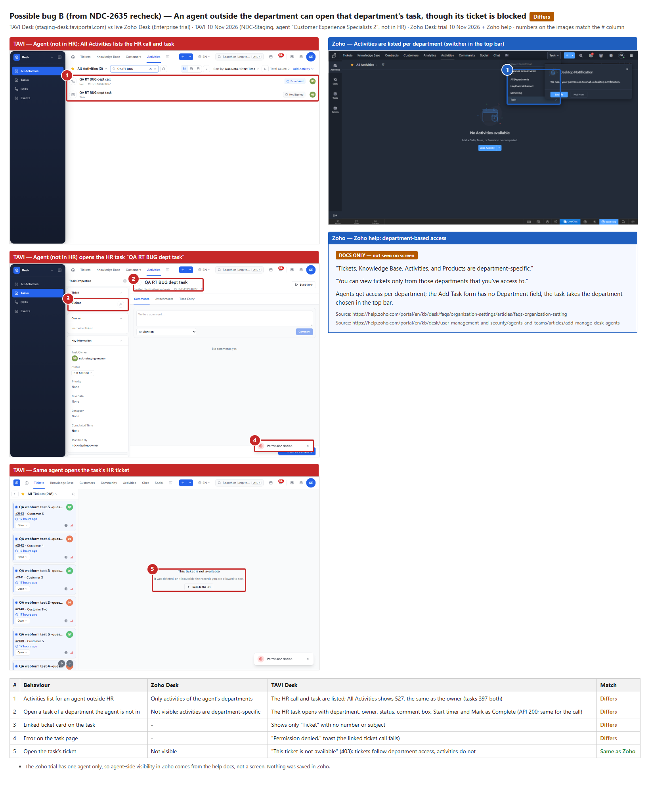
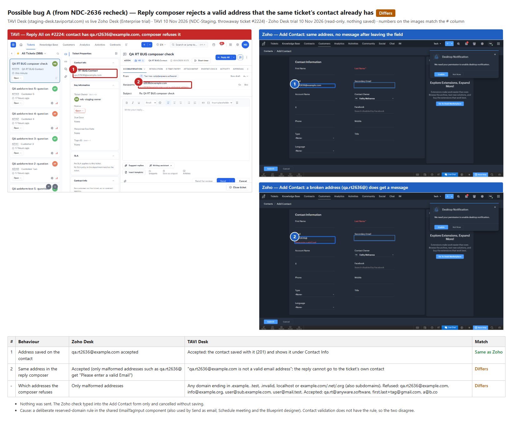

Gap-list rechecks: NDC-2636, 2635, 2805, 2628
1. Posted to Plane
| Ticket | Result | Comment | Images | State |
|---|---|---|---|---|
| NDC-2636 Ticket Replies | 1 built · 1 partly · 3 missing | e9efed2e | 2 | Backlog (unchanged) |
| NDC-2635 Activity Life Cycle | 1 built · 2 partly · 2 missing | f3d94515 | 3 | Backlog (unchanged) |
| NDC-2805 Desk Skills follow-ups | 1 missing · 1 partly · 1 not reproduced · 2 not checkable | 70832cc8 | 1 | unchanged |
| NDC-2628 CRM daily record work | 7 built · 2 partly | 88aa05a8 | 1 | Backlog (unchanged) |
2. What the results mean
NDC-2636 Ticket Replies: still mostly open
- Done: drafts are now saved on the server, so a half-written reply survives a reload (NDC-2644 closed).
- Half done: a failed email is marked "Not delivered", but there is no "delivered" or "read" mark per recipient.
- Missing: send-and-set-status (only "Send and Close"), the ticket number in the email subject, and richer editor tools (inline image, strikethrough, fonts, spell check).
NDC-2635 Activity Life Cycle: about half done
- Done: bulk delete.
- Half done: delete exists on list rows but not on the task, call or event page. Department is now required on every activity, but choosing it does not narrow the owner list, and other departments' agents can see the activity (bug B below).
- Missing: activity count on the ticket and an activities API.
NDC-2805 Desk Skills follow-ups: mostly technical clean-up
- Developer to confirm: old skills tables removed; upper/lower-case department ids. Neither is visible from the app.
- Not reproduced: a department deleted and restored today kept its skills. The ticket's case (deleted before 4 Nov) would need restoring someone else's department.
- Missing: the delete warning doesn't list approval processes. Desk has no approval processes yet, so this can't happen today.
- Half done: the note on the Skills field doesn't say the API name and the 10-skill limit are locked.
NDC-2628 CRM daily record work: practically done
- All 9 items exist. Only "#tag" search returns nothing (plain tag search works).
- The Campaigns and Cadences filters are missing because CRM has neither feature.
- Could reasonably be narrowed to "#tag search" alone.
3. Two possible bugs: drafts for review
Bug B: Desk Activities | An agent can see and open tasks and calls of departments they are not in
Steps
- As an admin, create a ticket in the HR department, then add a task and a call to it (department HR).
- Sign in as an agent who is not a member of HR.
- Open Activities → All Activities and search for the task's subject.
- Open the task. Then open its ticket.
Expected (as in Zoho Desk): activities belong to their department; an agent sees only activities of departments they have access to, the same as tickets.
Actual
- The HR task and call are listed for the agent. All Activities shows 527 for the agent, the same as the owner (tasks 397 for both).
- The task opens (API 200, same for the call) with its department, owner, status, comment box, Start timer and Mark as Complete.
- The task's ticket card shows only "Ticket" and a "Permission denied." toast appears.
- Opening the ticket itself is blocked: "This ticket is not available" (403). Tickets follow department access; activities do not.
Only reading was tried; editing or deleting the task as the agent was not attempted. Related, lower impact: after choosing a department in Add Task, the owner list still offers all 121 users instead of that department's agents (Zoho: the task takes the department from the top bar).

Bug A: Desk Replies | Reply composer says a reserved-domain address is "not a valid email address", though the contact holds it
Steps
- Create a contact with email
qa.rt2636@example.com; it saves (201). - Create a ticket for that contact. Contact Info shows the address.
- Open Reply All and enter the same address in Recipients.
Expected (as in Zoho Desk): a well-formed address is accepted. Zoho flags only malformed ones such as qa.rt2636@ ("Please enter a valid Email"). If TAVI wants to block reserved test domains, the contact form should do the same and the message should say why.
Actual: "qa.rt2636@example.com is not a valid email address". The composer refuses any domain ending in .example, .test, .invalid, localhost, or example.com/.net/.org (subdomains too). The contact form and Contacts API accept them, so a ticket's own contact can't be replied to.
- Refused: qa.rt2636@example.comqa2636@example.cominfo@example.orguser@sub.example.comuser@mail.testuser@company.exampleuser@localhost
- Accepted: qa.rt@anyware.softwarefirst.last+tag@gmail.coma@b.co
This is a deliberate rule in the shared email-address input (also used by Send as email, Schedule meeting and the Blueprint designer), not a broken check. Real customer addresses are not affected. Worth filing only for the wording and the mismatch with contact validation; you may prefer to drop it.

4. Zoho Desk comparison
| Point | Zoho Desk | TAVI Desk | How Zoho was checked |
|---|---|---|---|
Address qa.rt2636@example.com | Accepted, no message | Contact accepts it; reply composer refuses it | Trial account, Add Contact form, typed and cancelled (nothing saved) |
Malformed address qa.rt2636@ | "Please enter a valid Email" | Refused | Same form |
| Reserved test domains | Not blocked: Zoho's own sample contacts use @noemail.invalid | Blocked in the composer only | Trial contacts list |
| Activities and departments | "Tickets, Knowledge Base, Activities, and Products are department-specific"; agents see only departments they have access to | An agent outside HR lists and opens HR tasks and calls | Zoho help (Organization Settings FAQ, Adding and Managing Agents) + Activities department switcher |
| Department on Add Task | No Department field; the task takes the department from the top bar | Required Department field; owner list not narrowed by it | Trial Add Task form (cancelled) |
Limits: the Zoho trial has one agent only, so agent-side activity visibility comes from Zoho's help, not a screen. The Zoho reply composer was not typed into, because Zoho auto-saves drafts. NDC's own Zoho was not used.
Cleanup and open items
- Bug checks (10 Nov): contact, ticket #2224, task and call deleted and purged from the Recycle Bin; all return 404. Nothing was sent. Session files are deleted.
- Rechecks (9 Nov): all test data deleted and purged, except one empty CRM import session "qa-rt-2628.csv" (0 records) that staging cannot delete (405).
- Waiting for you: file bug B and/or bug A; post the NDC-2635 correction; narrow or close NDC-2628.